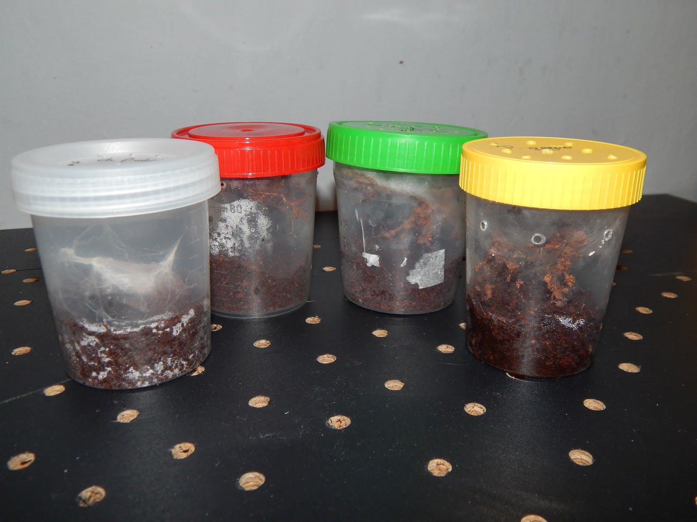
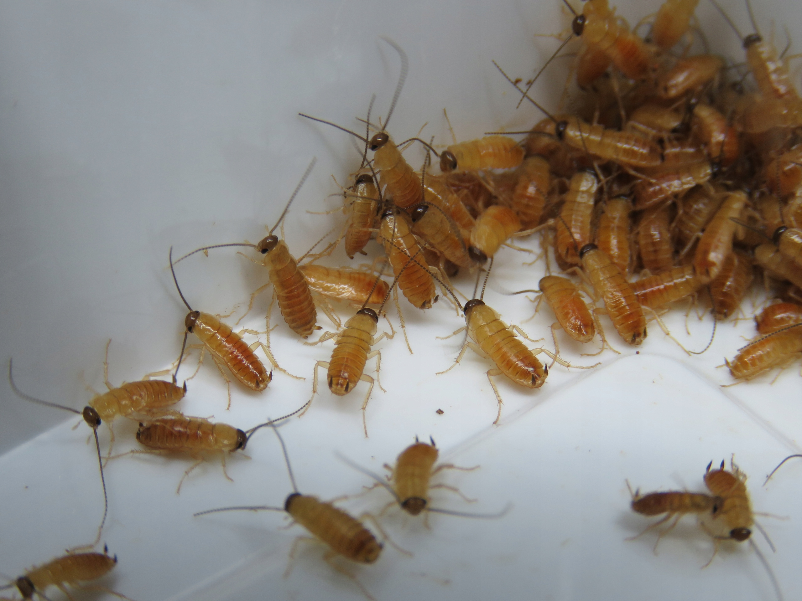
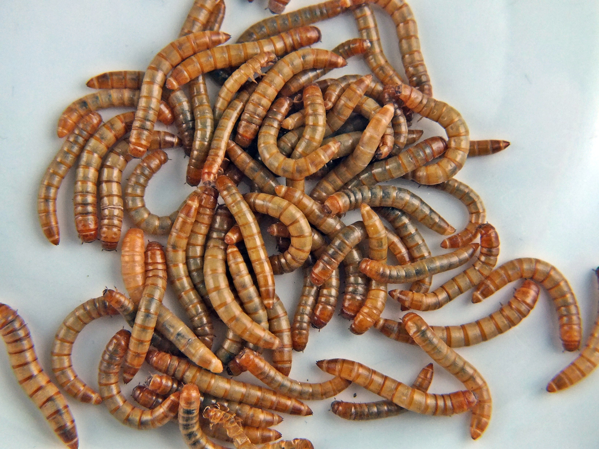
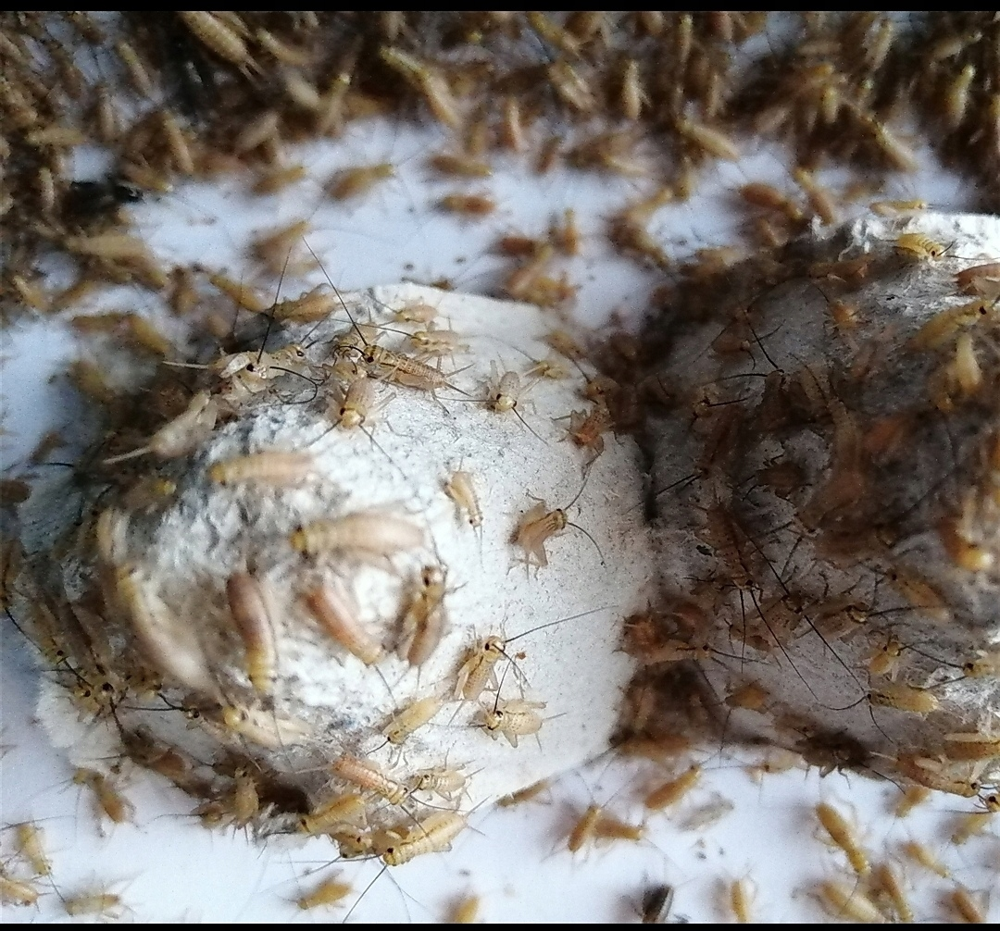
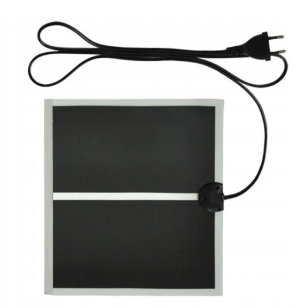
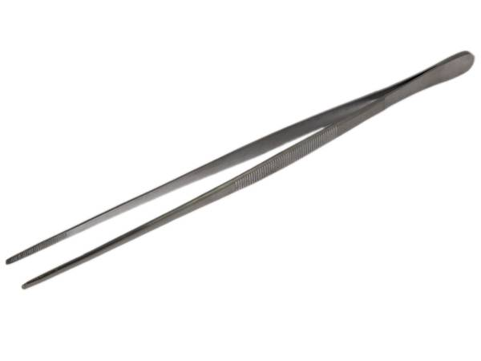

Wszystko co powienieneś mieć i wiedzieć przed nabyciem małego ptasznika
Pojemnik
Wystarczy pojemnik do kliszy lub pojemnik na mocz. Pamiętamy oczywiście o otworach w wieczku.
W pojemniku na mocz (tzw. moczboxie) możemy jescze zrobić dziurki w górnej części ścianek.
nie przesadzajmy jednak bo więcej nie znaczy lepiej. Przy dużej ilości otowrów podłoże będzie szybciej wysychać.
Kliszówka – pojemnik po kliszy

Moczbox – pojemnik laboratoryjny
Podłoże
Najlepsze i najbardziej dostępne będzie włókno kokosowe. Nie kupujmy podłóż w sklepach ogrodniczych z napisem "włókno kokosowe".
Nie sa to podłoża przystosowane dla zwierząt i moga zawierać robaki lub pasożyty. Dostosowane są one jedynie do roślin.
Włokno kokosowe do rozrobienia z wodą Włokno kokosowe gotowe
Karmóweczka
Dla młodych najpopularniejszym rozwiązaniem są świerszcze, mączniki i małe karaczany.
osobiście odradzam ostatniej opcji ponieważ w przypadku gdyby karaczany uciekły z pojemnika to łatwo moga się mnożyć i krzyżować z innymi owadami.
skutkuje to po prostu inwazja w mieszkaniu bądź domu bardzo trudna do wytępienia.
Mączniki są fajnym rozwiązaniem ale polecam odciąc lub zgnieśc głowę przed podaniem, aby zlikwidować ryzyko uszkodzenia lub zabicia pajączka przy wylince.
Taki minus posiadają przeważnie larwy, którym jest mącznik młynarek. Według mnie najlepszy jest młody wylęg świerszczy. Przy ewentualnej ucieczcenie nie rozplęgnie się po mieszkaniu i nie zapokie się w ziemi i nie zje pająca żywcem podczas linienia.
Dokarmianie owadami złapanymi z podwórka jest możliwe, ale lepiej jak są to hodowlane owady, bo te z natury mogą zawierać szkodliwe substancje.

małe karaczany

mącznik młynarek

młody wylęg świerszcza
Dogrzewanie
Jest mnóstwo sposobów na ogrzewanie ptaszników. Najbardziej prymitywnym jest lampka biórkowa z wkręconą tzw. "kwoką". Jednak ptaszniki nie przepadają za mocnym światłem.
bardziej pro opcjami na dogrzewanie są kable i maty grzewcze. W przypadku jednego ptasznika kabel grzewczy według mnie odpada,bo po co nam długi przewód do grzania dla małego w dodatku pająka.
Maty jest to tania opcja. Sam taki "grzejnik" dla pajaka sie jest drogi. Na allegro najmniejsza mata kosztuje około 20 - 30 zł.
Natomiast polecałabym już ta większą która starczyłaby pająkowi na całe życie (rozmiar ok. 15x28 cm). wkładamy ta matę tak aby dolegała do jednej z bocznych ścianek. Nie wolno kłaść pojemnika z ptasznikiem na grzejnik. Możemy tak szybko przesuszyc podłoże.
dodatkowo ptasznik jesli jest mu ciepło z natury zakopuje się w podłożu aby się ochłodzić.
Jeśli pojemnik z pupilem położymy go na kaloryfer zakopie sie on w jeszcze cieplejszym podłożu i się przegrzeje.

maty grzewczekabel grzewczyżarówka grzewcza (kwoka)
Utrzymywanie wilgotności
Pająki jak każde stworzenie potrzebują wody by żyć. Ptaszniki regularnie należy nawadniać. Jedną część pojemniczka przynajmniej 2 - 3 razy z tygodniu zraszamy wodą.
Młodziaki zazwyczaj wolą bardziej wilgotny teren. dobrze też psiknąć troche wodoą na scianki, ponieważ również spijają z niej wodę. Maluchom nie dajemy miseczki.
Spryskiwacz na wodę
Akcesoria i wystrój
Do hodowli pająka bardzo przydatna jest pęseta. Dla małego pająka wystraczy taka krótka mierzaca do 20 cm. Przy większych przydatnę są już takie 30 i 40 centymetrowe.
jesli chodzi o aranżacje terrarium dla maluszków nic nie jest potrzebne, chybaże kupujemy nadrzewnego ptasznika wtedy warto wsadzić do pojemniczka jakis kijek który absolutnie nie splesnieje.
Dobrym rozwiązaniem będzie ptastikowy patyczek po lizaku (drewniamy materiał łatwo pleśnieje).

pęseta 20 cm⬅ Powrót do galerii